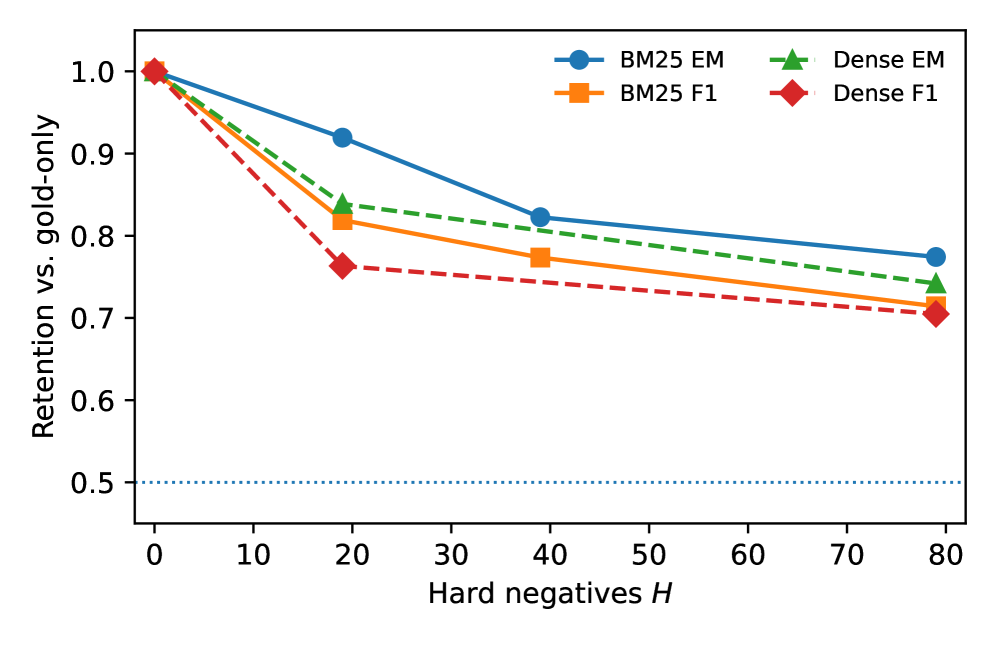

This paper introduces a matched-control protocol that isolates semantic competition from context length in RAG reading, showing that replacing hard distractors with far-rank passages partially restores reader performance.
本文提出了一种匹配对照协议，能够将语义竞争与上下文长度对RAG阅读器性能的影响分离开来。通过用远排名段落替换硬负例，实验表明阅读器性能（如F1和答案包含率）得到部分恢复，揭示了语义竞争是导致RAG失败的关键因素之一。
Deep Note — rag-competition-control
Key Takeaways - RAG reader failures are partly due to semantic competition among retrieved passages, not just context length. - A matched-control protocol that replaces hard negatives with far-rank passages partially recovers F1 and answer inclusion. - For Phi-2, recovery is +6.0 EM, +7.0 answer-inclusion, +0.057 F1; for Qwen2.5-1.5B, +4.5 EM, +9.0 answer-inclusion, +0.068 F1. - Retention curves degrade monotonically with more hard negatives but rarely cross half-retention, indicating robustness. - The competition effect is clearer for F1 and answer inclusion than for exact match, and varies with snippet length.
0) Metadata
- Title: Separating Semantic Competition from Context Length in RAG Reading
- Alias: rag-competition-control
- Authors: Vyzantinos Repantis, Ameya Gawde, Harshvardhan Singh, Rohit Alekar, Cien Zhang, Svetlana Karslioglu, Akash Vishwakarma
- arXiv ID: 2605.27294
- Published:
- Links:
- Abs: https://arxiv.org/abs/2605.27294
- HTML: https://arxiv.org/html/2605.27294v1
- PDF: https://arxiv.org/pdf/2605.27294
- Tags: retrieval-augmented-generation, semantic-competition, reader-evaluation, matched-control, context-length
- Domains: system_safety
- Rating: 3/5 (base 1 + quality 1 + observation 1)
1) Why-read
This paper introduces a matched-control protocol that isolates semantic competition from context length in RAG reading, showing that replacing hard distractors with far-rank passages partially restores reader performance.
2) CRGP
C — Context
RAG systems often fail even when the correct passage is retrieved, but prior work conflates context length with semantic competition among passages. The reader component must identify the correct passage among plausible distractors, and degradation is typically attributed to longer contexts rather than competition.
R — Related work
- Retriever-reader decomposition in open-domain QA (Chen et al., 2017)
- Long-context evaluation in RAG and language models
- Hard negative mining for retriever training
- Studies on context length vs. model performance in LLMs
G — Gap
Existing RAG evaluations do not separate the effect of context length from semantic competition among retrieved passages. When more passages are added, both length and competition increase, making it unclear which factor causes reader degradation.
P — Proposal
The authors propose a matched-control protocol that fixes the number and length of passages but replaces hard negatives (top-ranked BM25 distractors) with far-rank real passages from the same corpus. This isolates the competition effect, and experiments on Phi-2 and Qwen2.5-1.5B show partial recovery in F1 and answer inclusion.
---
4) Experiments
Main results
On SQuAD 1.1 with 50-word snippets: Phi-2 hard condition EM 24.5, F1 0.459, answer inclusion 70.0; far-control EM 30.5, F1 0.516, answer inclusion 77.0. Qwen2.5-1.5B hard EM 22.0, F1 0.387, answer inclusion 58.0; far-control EM 26.5, F1 0.455, answer inclusion 67.0. Retention curves show monotonic degradation with half-life >79 hard negatives.
Ablation
Using 80-word snippets for Qwen2.5-1.5B retention sweep shows similar monotonic degradation, with EM falling from 31.0 (H=0) to 24.0 (H=79) and F1 from 0.575 to 0.411, confirming the competition effect is robust to snippet length.
Limitations
['Experiments are limited to extractive QA on SQuAD and two compact open models, so generalizability to larger models and generative tasks is unclear.', 'The matched-control protocol uses BM25 for hard negatives; results may differ with dense retrievers.', 'Recovery is partial and weaker for exact match, suggesting competition effects are not fully separable from other factors.']
5) Why it matters
- Provides a methodology to disentangle competition from length, which is critical for diagnosing RAG failures.
- Highlights that reader robustness to distractors is a distinct challenge from context window limits.
- Offers a controlled benchmark (matched-control protocol) for future RAG reader improvements.
6) Next steps
- [ ] Apply the matched-control protocol to larger models (e.g., 7B-70B) and generative QA tasks.
- [ ] Investigate whether training readers on hard-negative competition improves robustness.
- [ ] Explore the interaction between competition and retriever quality (dense vs. sparse).
- [ ] Design adaptive context selection strategies that reduce semantic competition.
7) Scoring
3/5 = base 1 + quality 1 + observation 1
分离RAG阅读中的语义竞争与上下文长度
主要结论 - RAG阅读器失败的部分原因是检索段落间的语义竞争，而不仅仅是上下文长度。 - 匹配对照协议通过用远排名段落替换硬负例，可部分恢复F1和答案包含率。 - 对于Phi-2，恢复效果为+6.0 EM、+7.0 答案包含率、+0.057 F1；对于Qwen2.5-1.5B，恢复效果为+4.5 EM、+9.0 答案包含率、+0.068 F1。 - 保留曲线随硬负例数量增加单调下降，但很少低于半保留水平，表明模型具有一定鲁棒性。 - 竞争效应对F1和答案包含率的影响比精确匹配更明显，且随片段长度变化。
1) 阅读理由
本文提出匹配对照协议，分离语义竞争与上下文长度的影响，证明替换硬负例可部分恢复阅读器性能。
2) CRGP（背景 / 相关工作 / 差距 / 方案）
背景：RAG系统即使在检索到正确段落时也常失败，但先前工作将上下文长度与段落间的语义竞争混为一谈。阅读器需从看似合理的干扰项中识别正确段落，性能下降通常归因于更长的上下文而非竞争。
相关工作：开放域问答中的检索器-阅读器分解（Chen et al., 2017）；RAG和语言模型中的长上下文评估；检索器训练中的硬负例挖掘；LLM中上下文长度与模型性能的研究。
差距：现有RAG评估未分离上下文长度与检索段落间语义竞争的影响。当添加更多段落时，长度和竞争同时增加，导致无法确定阅读器性能下降的真正原因。
提议：作者提出匹配对照协议，固定段落数量和长度，但将硬负例（BM25排名靠前的干扰项）替换为来自同一语料库的远排名真实段落。这隔离了竞争效应，在Phi-2和Qwen2.5-1.5B上的实验显示F1和答案包含率部分恢复。
3) 实验
在SQuAD 1.1上使用50词片段：Phi-2在硬负例条件下EM为24.5，F1为0.459，答案包含率为70.0；远对照条件下EM为30.5，F1为0.516，答案包含率为77.0。Qwen2.5-1.5B在硬负例条件下EM为22.0，F1为0.387，答案包含率为58.0；远对照条件下EM为26.5，F1为0.455，答案包含率为67.0。保留曲线显示单调下降，半衰期超过79个硬负例。
消融实验
使用80词片段对Qwen2.5-1.5B进行保留扫描，显示类似的单调下降：EM从31.0（H=0）降至24.0（H=79），F1从0.575降至0.411，确认竞争效应对片段长度具有鲁棒性。
局限性
实验仅限于SQuAD上的抽取式问答和两个紧凑型开源模型，因此对更大模型和生成式任务的泛化性尚不明确。匹配对照协议使用BM25生成硬负例，使用稠密检索器时结果可能不同。恢复效果是部分的，且对精确匹配较弱，表明竞争效应无法完全与其他因素分离。
4) 重要性
- 提供了一种将竞争与长度分离的方法论，对诊断RAG失败至关重要。
- 强调阅读器对干扰项的鲁棒性是一个独立于上下文窗口限制的挑战。
- 为未来RAG阅读器改进提供了一个受控基准（匹配对照协议）。
5) 下一步
- [ ] 将匹配对照协议应用于更大模型（如7B-70B）和生成式问答任务。
- [ ] 研究在硬负例竞争下训练阅读器是否能提高鲁棒性。
- [ ] 探索竞争与检索器质量（稠密vs稀疏）之间的交互作用。
- [ ] 设计自适应上下文选择策略以减少语义竞争。
